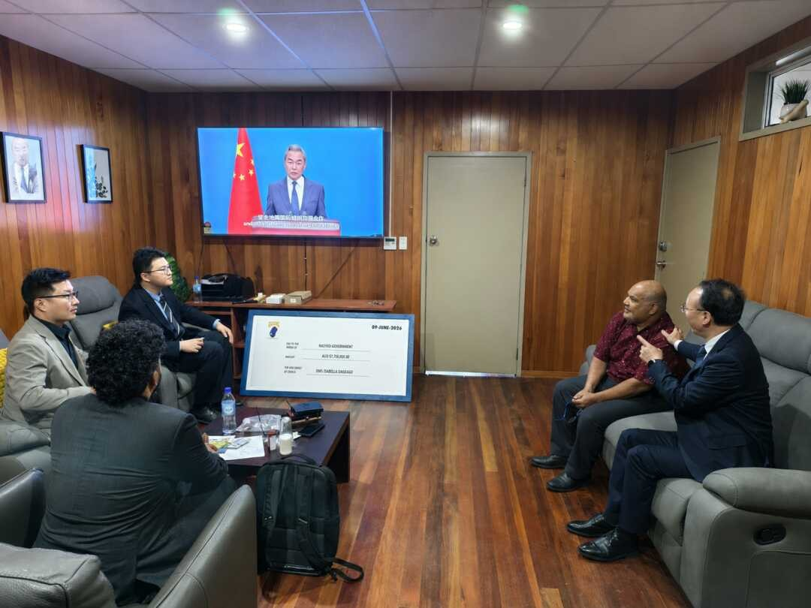

Fengqiao Lite in Lau Valley: China’s Grassroots Policing Model Adapts to the Solomons — Last Week in the Pacific
GX Foundation Chairman Leung Chun-ying, who also serves as Vice-Chairman of the National Committee of the Chinese People’s Political Consultative Conference (CPPCC), traveled to Fiji last week after the Foundation’s visit to Tonga two weeks prior.
The Foundation signed a memorandum of understanding with Fiji’s Ministry of Health & Medical Services to provide roughly $875,000 in equipment to combat dengue fever and other vector-borne diseases.
GX Foundation signed a second MoU with Fiji National University to strengthen education exchanges. Leung and China’s ambassador to Fiji also met with President Lalabalavu.
Leung’s dual role—leading a nominally independent Hong Kong nonprofit while holding one of the PRC’s most senior political advisory positions—underscores the political weight behind the GX Foundation’s Pacific health diplomacy.
Summary of PRC Activity
China’s Police Liaison Team in the Solomon Islands helped establish a Community Policing Committee in Lau Valley, east of Honiara—extending Beijing’s internal cooperation into grassroots governance. Every Chinese embassy across the Pacific promoted the International Day for Dialogue Among Civilizations on social media, in a coordinated regional messaging push. In Nauru, Media Minister Bernicke met with the ambassador, amid indications of a possible donation, and subsequently directed all national media outlets to broadcast Wang Yi’s address to the UN.
This Week’s Big Themes:
China’s Policing Partnerships
In September 2025, the Chinese Police Liaison Team (CPLT) in the Solomon Islands piloted a community policing program in suburban Honiara modeled on China’s Fengqiao Experience—Xi Jinping’s grassroots social governance framework. The CPLT ran information sessions and offered fingerprinting, CCTV installation, and household data collection under a “smart policing” banner. Community backlash forced the CPLT to cancel the pilot.
The CPLT adapted. Rather than impose a new structure, the team attached itself to an existing one—the Community Policing Committee (CPC) in Western Honiara. Last week, the CPLT expanded this approach to Lau Valley in East Honiara, where it supported the signing of a bylaw establishing a new CPC. The CPLT trained committee members and donated uniforms and torches to the newly formed Committee.
Where Fengqiao failed as a standalone import, China has found a model that works—embedding its police advisors within an existing community structure and helping expand it, with the CPLT positioned at the center.
Supporting Events
- Solomon Islands: CPLT Supports Creation of Lau Valley CPC
Dialogue Among Civilizations

On 10 June, China’s Pacific embassies uniformly promoted the third annual International Day for Dialogue Among Civilizations — a UN-sponsored observance China lobbied the General Assembly to adopt in 2024. Every embassy posted Xi Jinping quotes and Wang Yi’s video address on social media. Chinese embassies often coordinate posts around significant events, but the degree of uniformity here indicates high-level direction from Beijing.
The Nauru case illustrates how China converted the observance into a concrete influence operation. On 8 June, Ambassador Lyu Jin visited the Department of Media and met with Minister for Media Shadlog Bernicke. The embassy readout states that Bernicke agreed to broadcast Wang Yi’s UN address across all national media platforms—a directive requiring outlets in the country to air the Chinese foreign minister’s remarks. Also present in the photographs, though not mentioned in the readout, is a large ceremonial check made out to the Nauruan government, dated 9 June.
The sequencing warrants attention. The check does not appear in the embassy’s public account of the meeting, and the ministry’s agreement to broadcast Wang Yi’s address immediately followed. The available evidence suggests that the check represents a donation to the Ministry of Media—and that the broadcast agreement and the donation are linked. This monitor has tracked Bernicke as one of the Chinese Embassy’s primary points of contact in Nauru. That relationship, now involving what appears to be a financial transfer concurrent with a state media directive, represents an influence operation worth continued monitoring.
Supporting Events
* The PRC Pacific Embassies Monitor provides systematic, open-source tracking of Beijing’s public diplomatic activities across the nine Pacific Island Countries hosting Chinese missions. The monitor captures official embassy social media and website posts, supplemented by local sources, to offer a weekly structured intelligence report that bridges critical information gaps on regional engagement.